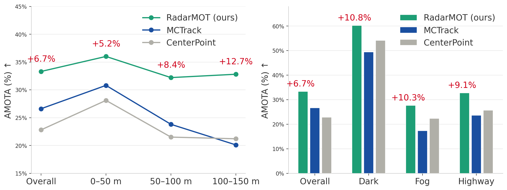
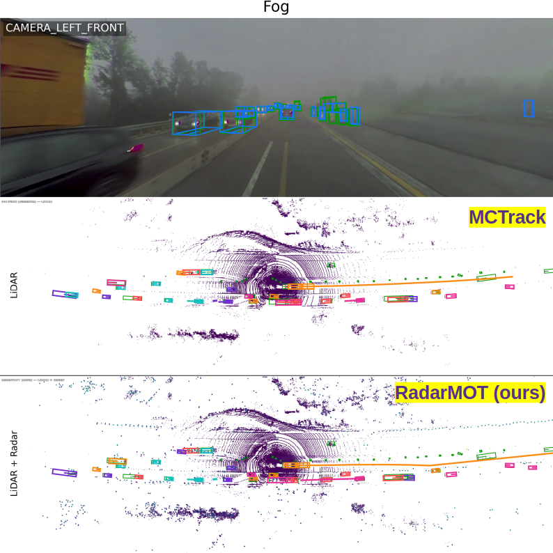
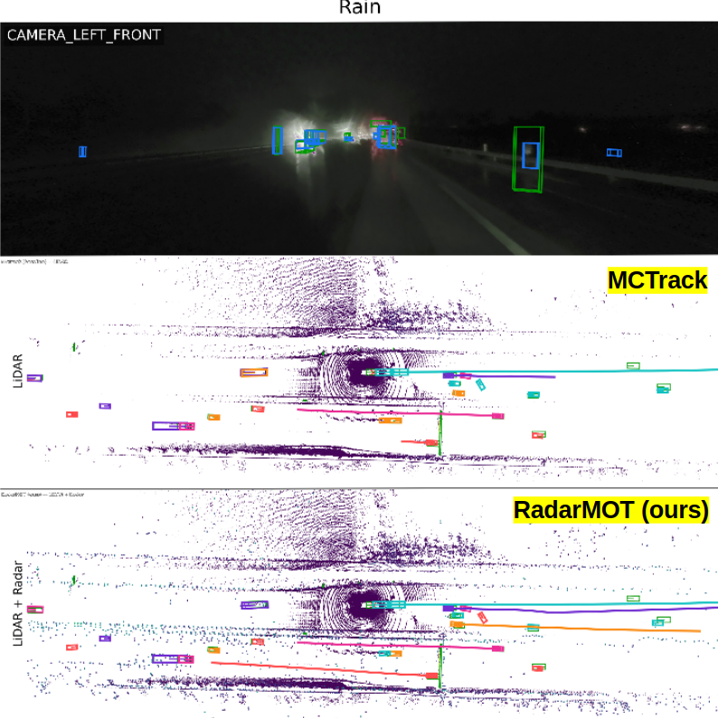
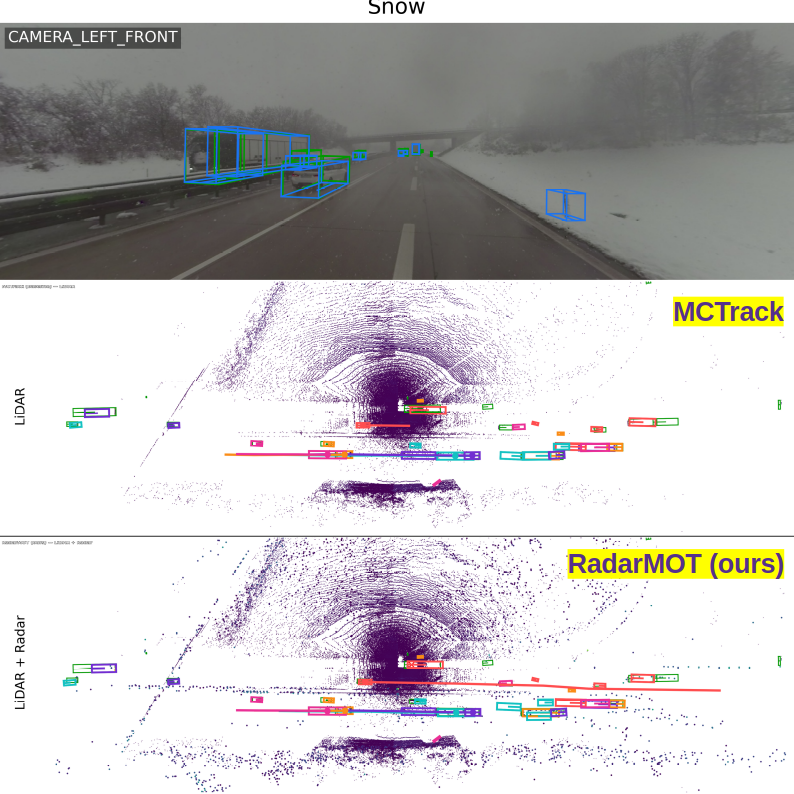

Abstract
The challenge of 3D multi-object tracking is achieving robustness in real-world applications, for example under adverse conditions and maintaining consistency as distance increases. To overcome these challenges, sensor fusion approaches that combine LiDAR, cameras, and radar have emerged. However, existing multimodal methods usually treat radar as another learned feature inside the network. When the overall model degrades in difficult environments, the robustness advantages that radar could provide are also reduced. In this paper we propose RadarMOT, a radar-informed 3D multi-object tracking framework that explicitly uses radar point clouds as additional observations to refine state estimation and recover objects missed by the detector at long ranges. Evaluations on the MAN-TruckScenes dataset show that RadarMOT consistently improves the Average Multi-Object Tracking Accuracy (AMOTA) by 12.7% at long range and up to 10.3% in adverse weather.
Results on MAN-TruckScenes Val Set
We compare with baselines under the same detector. Detailed metric summaries (range bins, classes, 34 scene tags) are provided in the linked JSON files.
Main Performance
| Method | Detector | AMOTA% ↑ | TP ↑ | FP ↓ | FN ↓ | IDS ↓ | Results |
|---|---|---|---|---|---|---|---|
| CenterPoint | CenterPoint | 22.8 | 37149 | 8467 | 26912 | 7278 | metrics_summary.json |
| MCTrack | CenterPoint | 26.6 | 33636 | 13026 | 32378 | 5325 | metrics_summary.json |
| RadarMOT (ours) | CenterPoint | 33.3 | 42717 | 12257 | 24906 | 3716 | metrics_summary.json |
Range Consistency
| Method | Overall AMOTA% ↑ / IDS ↓ |
0–50 m AMOTA% ↑ / IDS ↓ |
50–100 m AMOTA% ↑ / IDS ↓ |
100–150 m AMOTA% ↑ / IDS ↓ |
|---|---|---|---|---|
| CenterPoint | 22.8 / 7278 | 28.1 / 2766 | 21.5 / 3107 | 21.2 / 1518 |
| MCTrack | 26.6 / 5325 | 30.8 / 1804 | 23.8 / 1704 | 20.1 / 836 |
| RadarMOT (ours) | 33.3 / 3716 | 36.0 / 1321 | 32.2 / 1451 | 32.8 / 895 |

Qualitative Results under adverse weather

Fog

Rain

Snow
3D Multi-Object Tracking Demo
Visualizing the tracking results of RadarMOT method under adverse weather conditions.
Radar Recovery Demo
Visualizing radar-assisted recovery of objects missed by the detector and the extension of track duration.
BibTeX
@misc{xu2026radarinformed3dmultiobjecttracking,
title={Radar-Informed 3D Multi-Object Tracking under Adverse Conditions},
author={Bingxue Xu and Emil Hedemalm and Ajinkya Khoche and Patric Jensfelt},
year={2026},
eprint={2604.13571},
archivePrefix={arXiv},
primaryClass={cs.CV},
url={https://arxiv.org/abs/2604.13571},
}